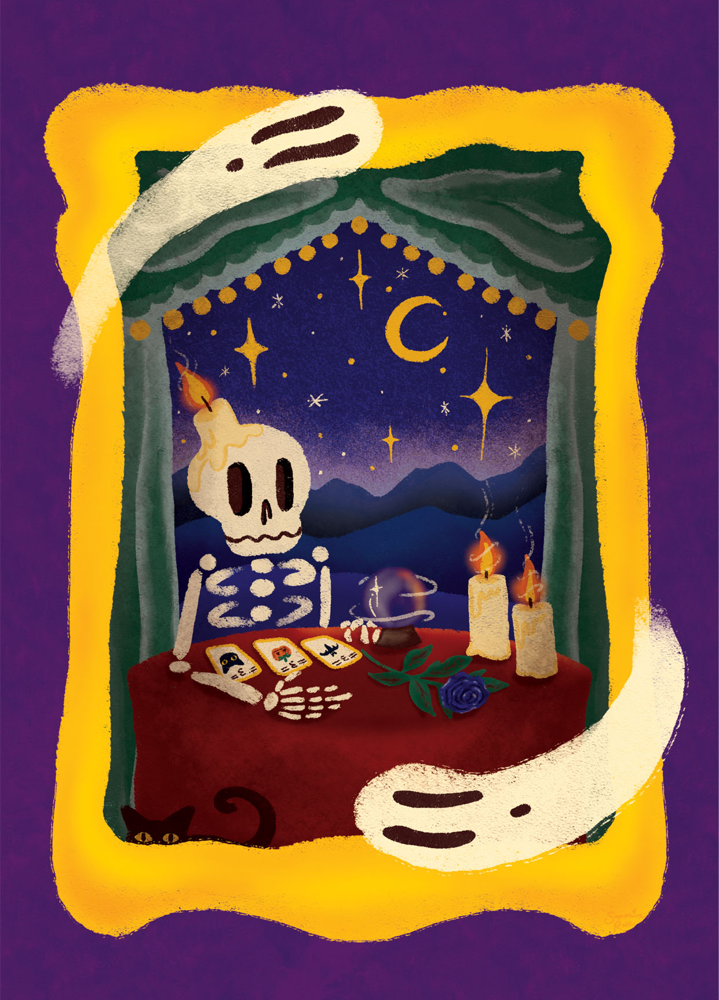

Maya Enfinger, Skeleton Nights, 2026, Digital Art
This illustration was made in Procreate. It was originally made to be a poster advertising a Halloween Faire but plans changed and the event changed, so now I have a cool illustration. The illustration was inspired by tarot and mysticism. I wanted to create a fortune teller scene with a twist. This is one of my new favorite illustrations because all the inspirations behind it and the subtle symbolism in the piece.